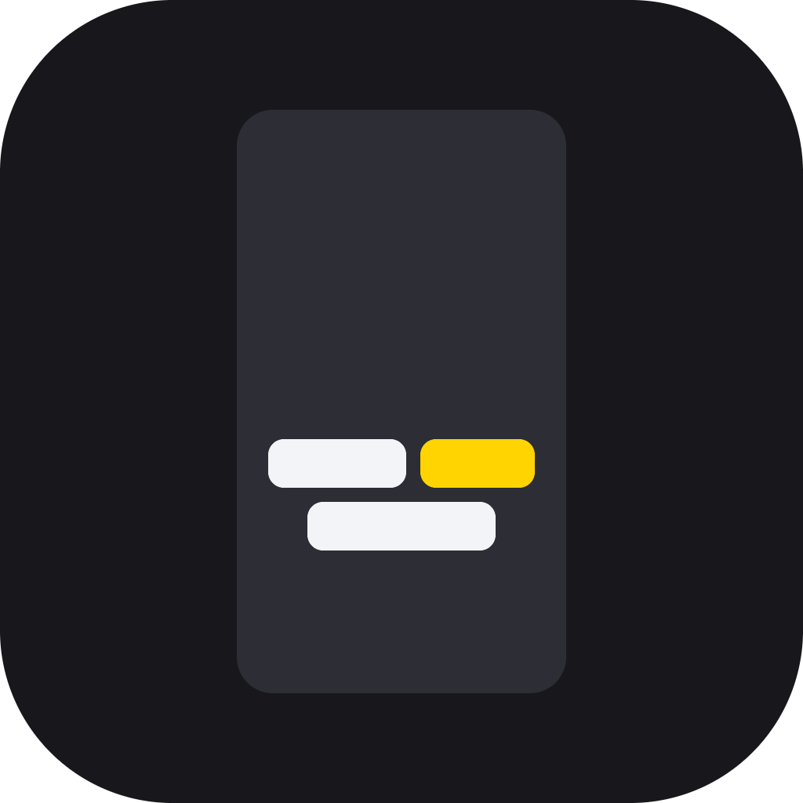
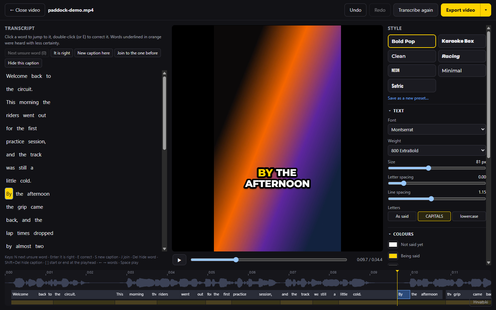
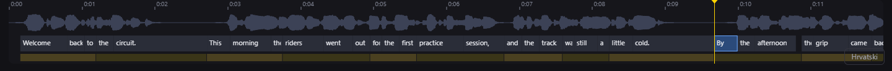
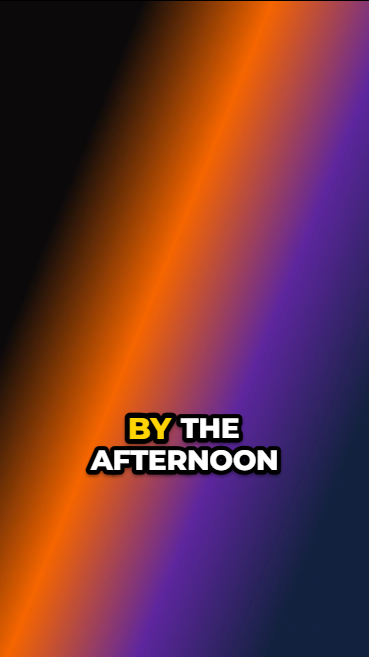
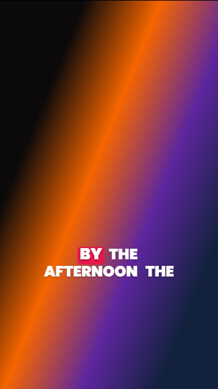
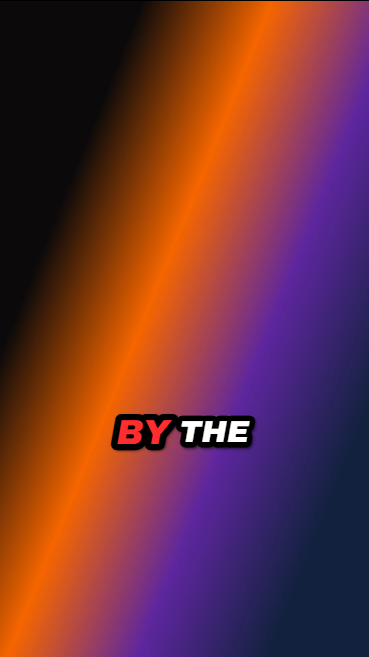
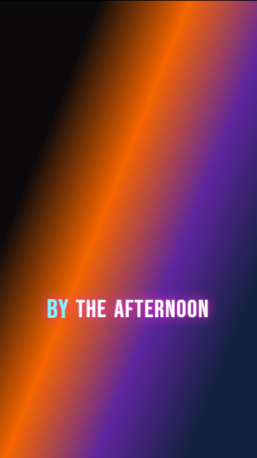
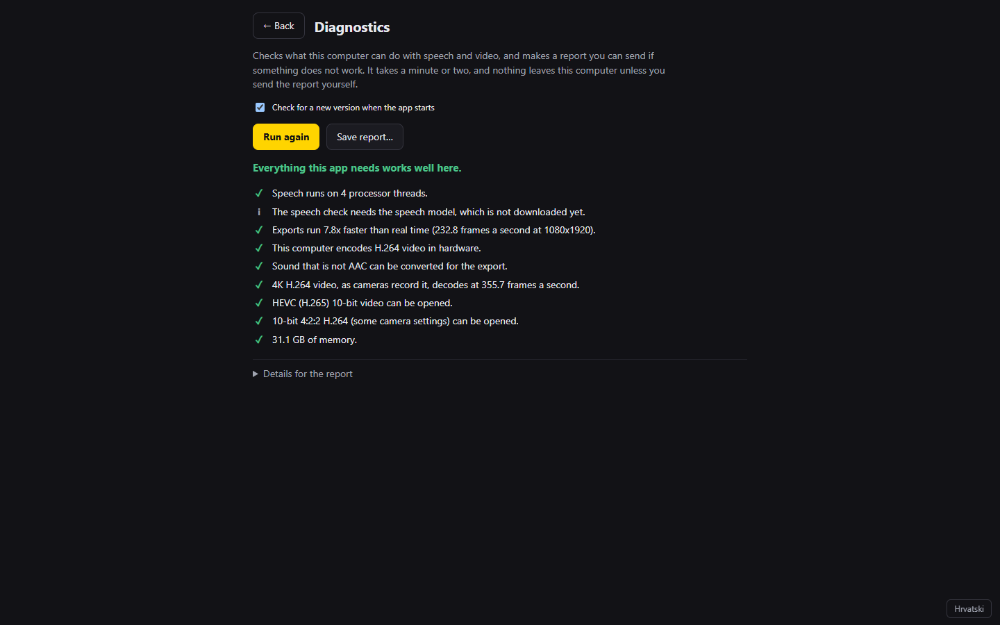

TikTok-style captions for your finished edits, made on your own computer.
Titlovi u stilu TikToka za tvoje gotove montaže, napravljeni na tvom računalu.
Open the edit, transcribe, check the orange words, pick a look, export.
Otvori montažu, prepoznaj govor, provjeri narančaste riječi, odaberi izgled, izvezi.
Drop it anywhere on the window, or press Open a video. Use the edit you are about to post: captions go on last. MP4, MOV, M4V, MKV and WebM open.
Ispusti je bilo gdje u prozor ili pritisni Otvori video. Koristi montažu koju ćeš objaviti: titlovi idu zadnji. Otvaraju se MP4, MOV, M4V, MKV i WebM.
Press Transcribe. The first time, the app downloads its speech model (640 MB, once) and then carries straight on. After that everything runs on this computer, offline: nothing you edit is ever uploaded.
Pritisni Prepoznaj govor. Prvi put aplikacija preuzme svoj model govora (640 MB, samo jednom) i odmah nastavi. Nakon toga sve radi na ovom računalu, bez interneta: ništa što uređuješ ne šalje se nikamo.
Words underlined in orange were heard with less certainty. N goes to the next one; Enter says it is right; a double-click (or E) corrects it.
Narančasto podcrtane riječi prepoznate su s manje sigurnosti. N ide na sljedeću; Enter kaže da je točna; dvostruki klik (ili E) je ispravlja.
Pick a preset on the right, then change anything you like. Drag the captions on the video to move them.
Odaberi predložak desno, a zatim promijeni što god želiš. Povuci titlove na videu da ih premjestiš.
Export video writes “your video - captions.mp4” beside your edit. Your edit itself is never changed.
Izvezi video zapiše „tvoj video - captions.mp4” uz tvoju montažu. Sama montaža se nikad ne mijenja.

Click a word to jump to it in the video. To correct it, double-click it (or select it and press E), type, and press Enter.
Klikni riječ da skočiš na nju u videu. Za ispravak dvaput je klikni (ili je odaberi i pritisni E), upiši i pritisni Enter.
The fast way through a transcript is N, look, then Enter if it is right or E to fix it. The button at the top says how many unsure words are left.
Najbrži prolaz kroz tekst je N, pogledaj, pa Enter ako je točno ili E za ispravak. Gumb na vrhu kaže koliko je nesigurnih riječi ostalo.
The app starts a new caption at a pause, at the end of a sentence, and when the caption has as many words as the style allows (Words at once). Lines are balanced, and a short word is never left alone on a line.
Aplikacija počinje novi titl na stanci, na kraju rečenice i kad titl ima onoliko riječi koliko stil dopušta (Riječi odjednom). Redovi su uravnoteženi i kratka riječ nikad ne ostaje sama u redu.
To decide yourself: select a word and press S to start a new caption there, or J to keep it with the caption before. Press the same key again to let the app decide. The blue mark beside a word shows where you have done either.
Ako želiš sam odlučiti: odaberi riječ i pritisni S za novi titl od nje ili J da ostane s prethodnim titlom. Ista tipka ponovno vraća odluku aplikaciji. Plava oznaka uz riječ pokazuje gdje si to učinio.

Every change can be undone with Ctrl+Z (⌘+Z on a Mac), and is saved by itself a moment later.
Svaka se promjena može poništiti s Ctrl+Z (⌘+Z na Macu) i sama se sprema trenutak kasnije.




Seven presets to start from: Bold Pop, Karaoke Box, Clean, Racing, Neon, Minimal and Sofric. Under them is every part of the look, in sections that fold away: the font and its size, the colour of words not said yet, being said and already said, how the word being said stands out, outline, shadow, glow, a background, lines and timing, position and animation.
Sedam predložaka za početak: Bold Pop, Karaoke, Čisto, Utrka, Neon, Minimalno i Sofric. Ispod njih je svaki dio izgleda, u odjeljcima koji se sklapaju: font i veličina, boja riječi koje još nisu izgovorene, koja se izgovara i već izgovorenih, kako se ističe riječ koja se izgovara, obrub, sjena, sjaj, pozadina, redovi i vrijeme, položaj i animacija.
Export video burns the captions into a new MP4 beside your edit, “your video - captions.mp4” — or “… (2).mp4” if that name is taken; nothing is ever replaced. The sound is copied as it is. The little arrow beside the button opens the options:
Izvezi video utisne titlove u novi MP4 uz tvoju montažu, „tvoj video - captions.mp4” — ili „… (2).mp4” ako je to ime zauzeto; ništa se nikad ne zamjenjuje. Zvuk se kopira kakav jest. Mala strelica pokraj gumba otvara mogućnosti:
Your corrections are saved beside the video as “your video.mp4.captions.json”. Keep it with the video and the captions come back when you open it again. If that folder cannot be written to, they are kept in the app's own folder instead.
Tvoji ispravci spremaju se uz video kao „tvoj video.mp4.captions.json”. Drži ga uz video i titlovi će se vratiti kad ga ponovno otvoriš. Ako se u tu mapu ne može pisati, čuvaju se u mapi same aplikacije.
| Space | Play / pause | Pokreni / pauziraj |
| N Shift+N | Next / previous unsure word | Sljedeća / prethodna nesigurna riječ |
| Enter | The selected word is right | Odabrana riječ je točna |
| E F2 | Correct the selected word | Ispravi odabranu riječ |
| ← → | Previous / next word | Prethodna / sljedeća riječ |
| S | Start a new caption at this word | Novi titl od ove riječi |
| J | Keep this word with the caption before | Zadrži riječ uz prethodni titl |
| Delete | Hide or show this word | Sakrij ili vrati ovu riječ |
| Shift+Delete | Hide or show this whole caption | Sakrij ili vrati cijeli titl |
| [ ] | Start / end of the word at the playhead | Početak / kraj riječi na trenutno mjesto |
| Ctrl+Z Ctrl+Y | Undo / redo (⌘ on a Mac) | Poništi / ponovi (⌘ na Macu) |
Sofric Captions is built and measured for English first. Its speech model also understands Croatian, German, Italian and Slovenian and will write them, but how accurate it is in those languages has not been measured yet, so check the words more carefully there. They will be offered properly one by one, each after it has been measured on real recordings.
Sofric Captions je napravljen i izmjeren prvo za engleski. Njegov model govora razumije i hrvatski, njemački, talijanski i slovenski i pisat će ih, ali koliko je točan na tim jezicima još nije izmjereno, pa tamo pažljivije provjeri riječi. Ponudit će se jedan po jedan, svaki nakon što bude izmjeren na stvarnim snimkama.
